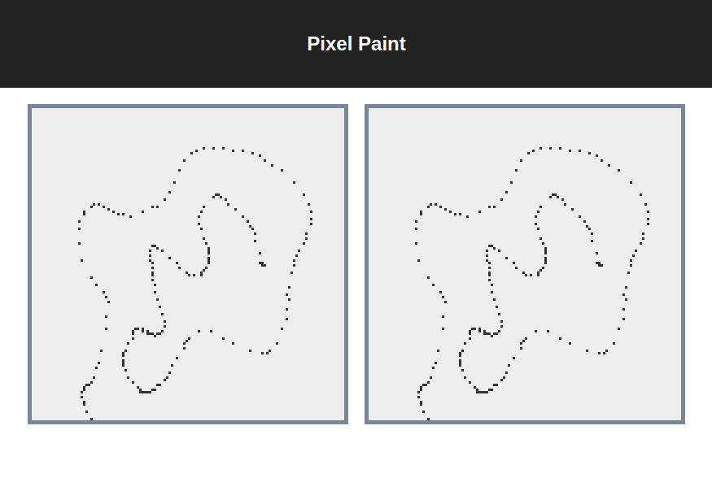

Performance of SPA built on React.js
React is fast, React is slow
Expectations

Reality

How React does make render?


“Oh, and no, React is not faster than DOM. Sorry. But it lets you build large performant apps without thinking too much about
performance.”
Dan Abramov
How to measure performance?
- Chrome Dev Tools
- React Dev Tools
react-addons-perf + ?react_perf- Performance API
Components Timing With Chrome Dev Tools
http://localhost:3000?react_perf

Common mistakes and ways to optimization
“There is no
“optimized” support for them yet because
stateless
component is wrapped in a
class internally. It's same code path.”
Dan Abramov
React.Component + shallow equal => React.PureComponent
Functions binding
Problem
Handler function for onClick
is recreated every render causing the re-render of
<Todo />
Lists and Keys
key property rules:
- Should be stable
- Should be unique among siblings
Possible consequences is
here
But.. what if we don't have id's?
- Use unique id's generator libs (uuid-js, etc.)
- Use counters
- Use indices, ONLY IF array elements are static, and array will not be changed (filtering, sorting)
Long lists and data grids
If you need to display huge amount of items (more than 500) in a list..
virtualize them!
-
react-virtualized
-
react-data-grid
When Redux does not perform well
What if we need to render a lot of components, that would have frequent updates?
Frequent re-renders of connected components will take a lot of time
Redux vs Mobx
An artificial example where MobX really shines and Redux is not really suited for it
https://goo.gl/rMe3BP

What about React 16 aka Fiber?
It's a total rewrite of core algorythm, based on implementation of interruptible stack
- Work on reconciliation/updates are broken into small chunks (~16ms)
- Prioritizing and scheduling updates, reusing nodes from old tree
- Limit the error boundaries
Common performance tips
- Make you DOM structure simplier
- Keep components count in DOM as less as possible
- Do not make any huge computations in
render()
- Clear any reactions, timers, delayed functions calls on
componentWillUnmount